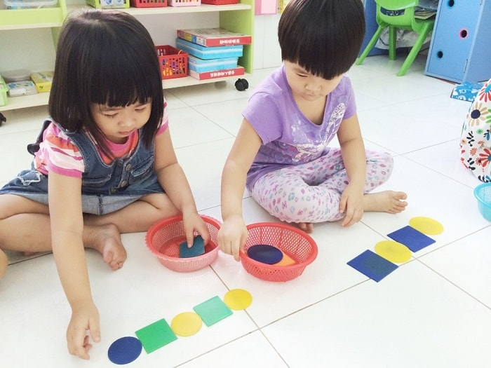
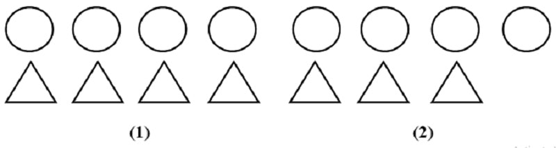
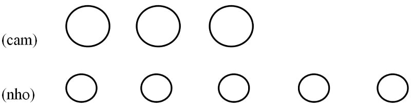

Danh sách trang
Dạy trẻ 5 tuổi học toán theo Chương trình giáo dục mầm non. Dạy trẻ mầm non học toán dễ dàng
Cách dạy trẻ 5 tuổi học toán như thế nào để trẻ cảm thấy thoải mái và thu được kết quả cao nhất. Về vấn đề này, giáo viên mầm non là người có chuyên môn hơn cả. Các bậc phụ huynh thường gặp phải khó khăn trong quá trình dạy trẻ 5 tuổi học toán.
Dạy trẻ 5 tuổi học toán cần đi từ cơ bản đến nâng cao, mục đích chủ yếu là cho trẻ mầm non làm quen với các biểu tượng toán học hơn là yêu cầu trẻ giải toán chuẩn xác. Hầu hết mọi người cho rằng: Toán học ở lứa tuổi mầm non quá đơn giản, hầu hết chỉ dừng lại ở đếm số và nhận dạng hình học, do đó không nhất thiết phải dạy dỗ bài bản cho trẻ. Đây là quan điểm sai lầm, bởi lẽ cho trẻ làm quen với biểu tượng toán học ở lứa tuổi mầm non chính là tiền đề giúp trẻ phát triển tư duy toán học sau này. Trẻ có đủ năng lực để học tập tốt tại môi trường tiểu học mà không gặp bất kỳ hạn chế nào.

Dạy toán cho trẻ 5 tuổi là cho trẻ làm quen với biểu tượng toán học
Cách dạy trẻ 5 tuổi học toán gồm có những nội dung gì?
Nội dung dạy trẻ 5 tuổi học toán được chia thành hai giai đoạn chính tùy theo sự phát triển của lứa tuổi. Dạy trẻ học toán tại thời điểm 4-5 tuổi có sự khác biệt về nội dung và phương pháp so với trẻ 5-6 tuổi. Dưới đây là nội dung dạy toán cho trẻ mầm non đối với trẻ 4-5 tuổi và 5-6 tuổi (căn cứ theo chương trình giáo dục mầm non mới nhất hiện nay).
Đối với trẻ 4-5 tuổi, nội dung dạy toán cho trẻ bao gồm:
-
Tập hợp số lượng, số thứ tự và đếm
- – Dạy trẻ đếm và nhận biết số lượng các nhóm đối tượng trong phạm vi 10.
- – Dạy trẻ nhận biết các con số chỉ số lượng và các con số thứ tự trong phạm vi 5.
- – Dạy trẻ gộp 2 nhóm đối tượng và đếm.
- – Dạy trẻ tách 1 nhóm thành 2 nhóm.
-
Xếp tương ứng, ghép đôi
- – Dạy trẻ xếp tương ứng 1:1 để so sánh số lượng các nhóm đối tượng mà không cần đến phép đếm, trên cơ sở đó dạy trẻ nhận biết và phản ánh bằng lời nói mối quan hệ về số lượng giữa hai nhóm đối tượng bằng nhau – không bằng nhau, nhiều hơn – ít hơn.
-
So sánh, phân loại và sắp xếp theo quy tắc
- – Ôn tập cách so sánh kích thước giữa 2 đối tượng theo từng chiều đo kích thước: chiều dài, chiều rộng, chiều cao và độ lớn bằng các biện pháp so sánh như: xếp chồng, xếp cạnh các vật với nhau và ước lượng kích thước của các vật bằng mắt.
- – Dạy trẻ so sánh và sắp xếp 3 đối tượng theo trình tự nhất định về kích thước, dạy trẻ nắm và biết sử dụng các từ: to nhất, nhỏ hơn, nhỏ nhất, ngắn nhất, dài hơn, ngắn nhất,… để diễn đạt bằng lời mối quan hệ kích thước giữa các vật.
- – Dạy trẻ so sánh số lượng của 2 nhóm đối tượng trong phạm vi 10 bằng cách xếp tương ứng 1:1.
- – Phân loại: Tạo thành các nhóm đối tượng theo đặc điểm hay dấu hiệu nào đó như: màu sắc, hình dạng, kích thước, dạy trẻ phân loại theo 1-2 dấu hiệu cho trước.
- – Xếp theo quy tắc: dạy trẻ sắp xếp các đối tượng theo 1 quy tắc cho trước, hay theo quy tắc trẻ tự nghĩ ra, nhận ra quy tắc sắp xếp sẵn của đối tượng và tiếp tục xếp theo quy tắc đó.
-
Đo lường
- – Dạy trẻ đo độ dài bằng một đơn vị nào đó.
- – Đo thể tích, dung tích bằng một đơn vị nào đó (bát, cốc,…)
-
Hình dạng
- – Dạy trẻ phân biệt các hình: vuông, tròn, tam giác và hình chữ nhật trên cơ sở so sánh để thấy được sự giống và khác nhau giữa các hình đó.
- – Dạy trẻ sử dụng các hình học phẳng và các hình khối đã biết để xác định hình dạng của các vật có ở xung quanh trẻ.
-
Định hướng trong không gian và định hướng về thời gian
- – Dạy trẻ nhận biết và xác định các hướng không gian cơ bản so với bản thân trẻ như: phía trên – phía dưới, phía trước – phía sau.
- – Dạy trẻ nhận biết các buổi trong ngày: sáng, trưa, chiều, tối.
Đối với trẻ 5-6 tuổi, nội dung dạy toán cho trẻ bao gồm:
-
Tập hợp, số lượng, số thứ tự và đếm
- – Dạy trẻ đếm và nhận biết số lượng, luyện đếm đến 10.
- – Dạy trẻ nhận biết các số thứ tự trong phạm vi 10.
- – Dạy trẻ gộp 2 nhóm đối tượng và đếm.
- – Dạy trẻ tách 1 nhóm thành 2 nhóm bằng các cách
-
Xếp tương ứng, ghép đôi
- – Luyện tập cách xếp tương ứng 1:1 để so sánh số lượng các nhóm đối tượng.
- – Dạy trẻ tạo thành cặp, thành đôi 2 đối tượng có liên quan đến nhau ở mức độ khó hơn.
-
So sánh, phân loại và sắp xếp theo quy tắc
- – Luyện tập cách so sánh kích thước giữa 2 đối tượng theo từng chiều đo kích thước: chiều dài, chiều rộng, chiều cao và độ lớn bằng các biện pháp so sánh kích thước, như: đặt các đối tượng kề nhau, đặt chồng lên nhau, đặt lồng vào nhau, đặt trên cùng một mặt phẳng hoặc ước lượng bằng mắt.
- – Dạy trẻ sắp xếp các đối tượng theo trình tự nhất định về kích thước của từ 3 đối tượng trở lên, dạy trẻ nắm và biết sử dụng các từ: to nhất, nhỏ nhất, nhỏ hơn, ngắn nhất, dài hơn, dài nhất,… để diễn đạt bằng lời mối quan hệ kích thước giữa các vật.
- – Luyện tập cách so sánh số lượng của 2 nhóm đối tượng trong phạm vi 10 bằng cách xếp tương ứng 1:1.
- – Dạy trẻ sắp xếp theo 3 nhóm đối tượng theo sự tăng hay giảm dần về số lượng của các nhóm và sử dụng các từ: nhiều nhất, ít hơn, ít nhất.
- – Phân loại: Tạo thành nhóm các đối tượng theo đặc điểm hay dấu hiệu nào đó như: màu sắc, hình dạng, kích thước và một số đặc điểm khác. Luyện cho trẻ tạo nhóm theo 1-2 dấu hiệu cho trước, tự phân chia thành các nhóm theo dấu hiệu chung của nhóm, tự nhận ra dấu hiệu chung của nhóm cho trước, tìm ra 1 đối tượng không thuộc nhóm.
- – Xếp theo quy tắc: dạy trẻ sắp xếp các đối tượng theo 1 quy tắc cho trước, hay theo quy tắc trẻ tự nghĩ ra, nhận ra quy tắc sắp xếp sẵn của đối tượng và tiếp tục sắp xếp theo quy tắc đó.
-
Đo lường
- – Dạy trẻ đo độ dài của một vật bằng các đơn vị đo khác nhau.
- – Đo thể tích, dung tích bằng một đơn vị nào đó. So sánh và diễn đạt kết quả đo.
-
Hình dạng
- – Dạy trẻ nhận biết và nắm được tên gọi các hình khối: khối vuông, khối cầu, khối trụ và khối hình chữ nhật theo khối mẫu và theo tên gọi.
- – Dạy trẻ phân biệt sự giống và khác nhau giữa khối cầu và khối trụ, khối vuông và khối chữ nhật, dạy trẻ tạo ra các khối này.
- – Dạy trẻ sử dụng các hình hình học phẳng và các hình khối đã biết để xác định hình dạng của các vật ở xung quanh trẻ.
-
Định hướng trong không gian và định hướng thời gian
- – Củng cố xác định vị trí: phía trên – phía dưới, phía trước – phía sau, phía phải – phía trái của trẻ và của người khác.
- – Dạy trẻ xác định phía phải – phía trái của người khác.
- – Dạy trẻ xác định vị trí của vật này so với vật khác.
- – Dạy trẻ nhận biết và gọi tên các ngày trong tuần, phân biệt hôm qua, hôm nay, ngày mai.
Dạy toán cho trẻ thông qua trò chơi toán học cho trẻ mầm non
Cách dạy trẻ 5 tuổi học toán hiệu quả
Dạy trẻ 5 tuổi so sánh số lượng bằng ghép đôi
- – Cho trẻ nhận biết dấu hiệu các nhóm đối tượng.
- – Cho trẻ ghép đôi từng cặp các đối tượng của hai nhóm theo biện pháp (1) hoặc (2). Khi đó xảy ra hai trường hợp.

– Giáo viên gợi ý để trẻ nhận xét được:
Trường hợp (1): cả hai nhóm không có đối tượng nào thừa ra
Giáo viên khái quát hóa kết quả để hình thành biểu tượng “Nhiều bằng nhau”: Số lượng hai nhóm nhiều bằng nhau khi ghép đôi cả hai nhóm không có đối tượng thừa ra.
Trường hợp (2): Thừa một chấm tròn hoặc thiếu một tam giác.
Ví dụ: Trẻ thường nói “số chấm tròn hơn số tam giác là 4”. Giáo viên cần giúp trẻ hiểu rõ thừa ra 1 chấm tròn vì vậy số chấm tròn nhiều hơn số tam giác, và nhiều hơn là 1.
– Trong phần luyện tập, giáo viên có thể cho trẻ so sánh số lượng hai nhóm qua một nhóm trung gian; cho trẻ so sánh các nhóm có kích thước và số lượng các đối tượng khác nhau rõ rệt (ví dụ: 3 quả với 5 quả nhỏ) để phá vỡ quan niệm số lượng phụ thuộc vào kích thước. Sau khi ghép đôi các đối tượng của hai nhóm để nhận ra kết quả, giáo viên cho trẻ tập diễn đạt kết quả và giải thích kết quả dựa vào mối quan hệ vừa hình thành.

Ví dụ: Nho có phần thừa ra nên số nho nhiều hơn số cam, hoặc số nho nhiều hơn số cam vì nho có phần thừa ra. Số cam ít hơn số nho vì cam còn thiếu không đủ ghép đôi.
Cách dạy trẻ 5 tuổi nhận biết số lượng và so sánh số lượng bằng phép đếm
* Nguyên tắc lập số mới: số mới được thành lập bằng cách thêm vào nhóm đối tượng biểu thị số cũ một đối tượng nữa để được tập hợp có số lượng biểu thị số mới.
* Những lỗi trẻ thường mắc khi dạy trẻ học đếm:
- – Chưa thuộc thứ tự các số tự nhiên khi đọc số.
- – Khi đếm chưa biết gắn mỗi đối tượng với một số bắt đầu từ số 1, còn đếm lặp lại, đếm bỏ sót, một số ứng với nhiều vật hoặc một vật ứng ứng với nhiều số,…
- – Chưa biết tách số cuối cùng ra khỏi quá trình đếm để tạo thành kết quả đếm.
* Cách khắc phục:
- – Trước khi dạy đếm, giáo viên cho trẻ đọc các số tự nhiên bắt đầu từ số 1.
- – Khi dạy đếm, cho trẻ đếm, các đối tượng được xếp thành dãy (theo hàng ngang hoặc hàng dọc) và nhất thiết phải chỉ tay vào từng vật, mỗi vật ứng với một số bắt đầu từ số 1.
- – Sau khi đọc xong số cuối cùng, giáo viên cho trẻ dùng tay khoanh tròn cả nhóm đối tượng và đọc câu:
- Tất cả có + Số cuối cùng + Tên đối tượng
Trên đây là cách dạy trẻ 5 tuổi học toán – áp dụng theo chương trình giáo dục mầm non mới nhất hiện nay. Phương pháp dạy trẻ 5 tuổi học toán như trên chắc hẳn đã quen thuộc với giáo viên mầm non. Hầu hết các trường mầm non trong và ngoài công lập đều sử dụng nội dung và cách thức dạy toán cho trẻ 5 tuổi như trên. Các bậc phụ huynh có thể tham khảo và tiến hành dạy trẻ học toán tại nhà.
Phương pháp dạy toán cho trẻ nếu thực hiện đúng nguyên tắc giáo dục, biết cách tạo hứng thú cho trẻ trong quá trình học tập, thì việc tiếp nhận kiến thức sẽ trở nên dễ dàng hơn bao giờ hết. Cách dạy toán cho trẻ 5 tuổi thường đi liền với trò chơi toán học cho trẻ mầm non nhằm củng cố kiến thức – kỹ năng đã học, đồng thời tạo sự hứng khởi nhất định.
Cách dạy trẻ 5 tuổi học toán thông minh, hiệu quả được chia sẻ tại Blog Nuôi dạy trẻ. Các bậc phụ huynh, giáo viên mầm non, sinh viên chuyên ngành Giáo dục mầm non có thể truy cập website chính thức: https://nuoidaytre.com.vn để tham khảo thông tin hữu ích. Blog chứa rất nhiều nội dung thiết thực, thú vị về lĩnh vực chăm sóc – giáo dục trẻ em, phù hợp với cha mẹ nuôi con nhỏ, cô giáo mầm non, và người làm việc trong lĩnh vực giáo dục.